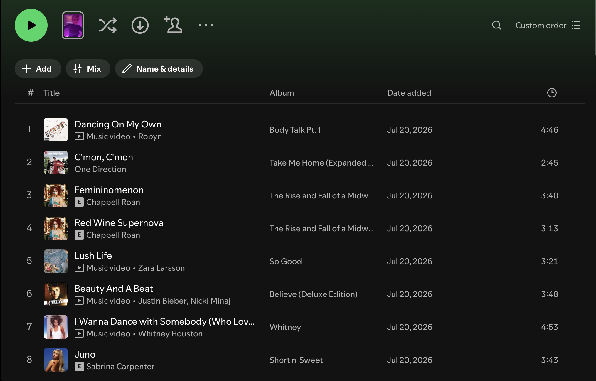
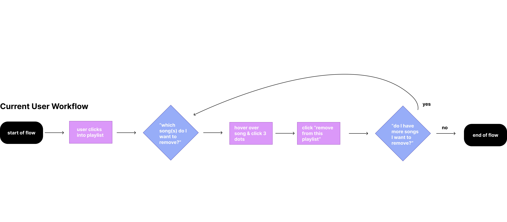
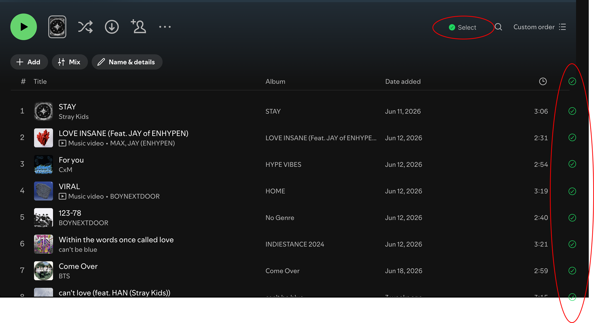
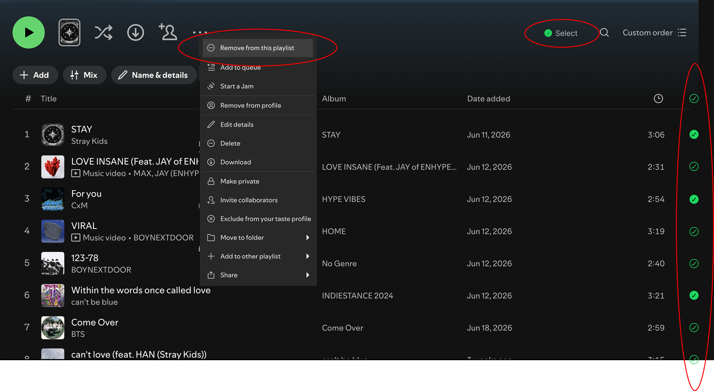
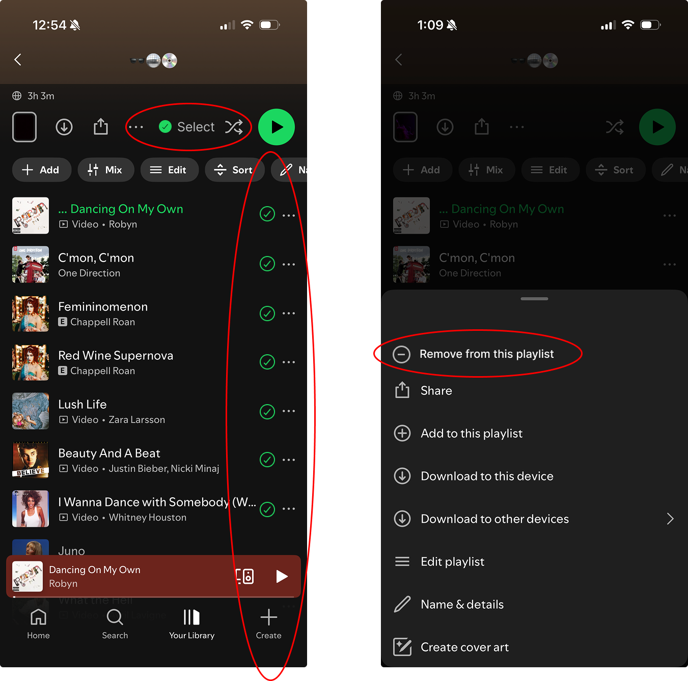

product concept
solo project — spotted the friction, designed the fix
A small UX fix for something that kept bugging me every time I cleaned up a playlist: removing multiple songs meant repeating the exact same hover → menu → remove sequence, one song at a time.
the friction
For the longest time, I had no idea there was even a way to remove multiple songs from a Spotify playlist at once. Turns out there kind of is: on web and desktop, holding Ctrl (or Shift) while clicking lets you select more than one song before removing them. But there's no actual button or visual cue that tells you this is possible, and it doesn't work at all on mobile. I found that to be a pretty confusing user experience. The capability exists, but nothing in the interface suggests it does. Instead, the UI suggests that I would have to click on "..." to open up more options, and then manually delete each song one at a time.


how I worked
the fix
Instead of a hidden keyboard shortcut, multi-select gets an actual visible affordance and "remove from this playlist" moves to the main menu, where it acts on every checked song at once. This works the same way on mobile, which the current Ctrl/Shift trick doesn't. And, this is a familiar workflow that other platforms use. For example, the Select button when selecting photos to delete in your Apple photos.
desktop


mobile

what else could've worked
The visible select + bulk-remove button was the most direct fix, but it wasn't the only option on the table. Here are a few other options that could be future add-ons:
Nobody should need to know a hidden shortcut so I landed on the visible select + bulk-remove button because it solves the actual problem without introducing new risk like accidental bulk deletes. Trash-icon + undo would likely be the stronger v2 once the core interaction is validated.
why it matters
This turns playlist cleanup from a repeated, linear task into a single batch action. The more songs you're removing, the more time it saves. It's a small interaction change, but it's exactly the kind of annoying thing that adds up across a lot of playlist edits, and a good example of a fix that's easy to overlook precisely because the underlying capability already technically exists. It just needed a better UI!